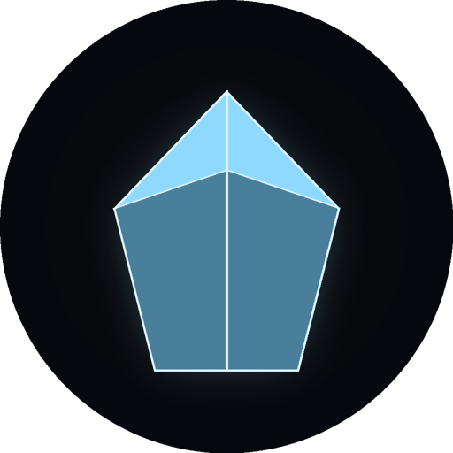

KRYPTONIXTon assistant IA personnel. Il tourne entièrement sur ton PC : gratuit, sans compte, et tes conversations ne quittent jamais ta machine.
Clique sur le bouton ci-dessus.
Ouvre le fichier téléchargé. Tout s'installe tout seul, sans aucune question.
L'IA s'ouvre. La toute première fois, elle prépare son cerveau (quelques minutes, une seule fois).
Oui. L'application n'est pas encore signée numériquement (c'est payant), donc Windows SmartScreen prévient pour tout programme peu connu. Clique sur Informations complémentaires puis Exécuter quand même.
Non, rien du tout. KRYPTONIX installe lui-même ce dont il a besoin, en arrière-plan.
Non. L'IA tourne sur ton PC. Seuls la météo, les actualités et la voix neuronale utilisent internet.
Paramètres Windows → Applications → KRYPTONIX → Désinstaller. Tes données restent dans %APPDATA%\Kryptonix si tu veux les récupérer.